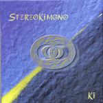

| Artist: | StereoKimono |
| Title: | Ki |
| Label: | irIdea Records a000-11-3 |
| Length(s): | 48 minutes |
| Year(s) of release: | 2000 |
| Month of review: | [05/2001] |
| 2) | Apoteotico | 4.52 |
| 4) | Per Vederlo Devi Chiudere Gli Occhi | 4.11 |
| 6) | Instanbul Di Giorno | 5.58 |
| 7) | Concerto No.1 Per Pianoforte E Sgabello | 0.58 |
| 8) | Il Nulla Respira | 7.24 |
Apoteotico opens with subtle bass work and spacey acoustic guitar and soft keys in the back. The music has a strong Baddalamenti (Twin Peak) feel. Then slowly some pace is added and we get something akin to circus music, but a bit more forceful. All in all rather bouncy with some playful marimba like touches.
Phileas Fogg is the only track to pass the ten-minute mark and opens as quietly as the previous track. Soft, spacy stuff a bit in the line of Fripp's soundscapes. Then the guitar comes in and we are in a Shine On You Crazy Diamond styled passage with tense, slightly Arabic sounding melodies and spacey sounding slide guitar. In parts the Pink Floyd reference is very strong. When the organ makes its entrance the music becomes Latin tinged jazzrock with a strong Fender Rhodes feel. The final part is more in a moody style, mostly because of the ever present bass sound.
In a song with a title such as Per Vederlo Devi Chiudere Gli Occhi, one does not expect hear a voice in German. This rather avant-gardistic piece is something which would fit well on the Cuneiform label. Weirdly swirling keyboards and a tuba-like beat gives way to clear acoustic guitar. The next passage is rather playful and I find myself tapping along with the rhythm of this track. There's something definitely Spanish sounding about it.
On L'Altra Marea experimentation strikes. We are in the regions of tone poems here with heffects on the guitar for the most part it seems (okay, might be bass too). One might be tempted to think of King Crimson at its eeriest here. Floydian spaceness returns at the end of this track.
Instanbul Di Giorno opens forebodingly in horror movie soundtrack style. As one might expect the melodies sound Middle-Eastern with many of them intertwining. The middle part on keyboards is more of a folky nature with even some violin. Then the electric guitar returns and the driving, off-beat rhythm take you along, and back to the Arabic part. The short Concerto No.1 Per pianoforte E Sgabello features piano but also something like a wrung out saxophone.
Il Nulla Respira is a bouncy easy-going track. A bit too easy-going perhaps. I would have liked a bit more adventure. The German returns at the end.